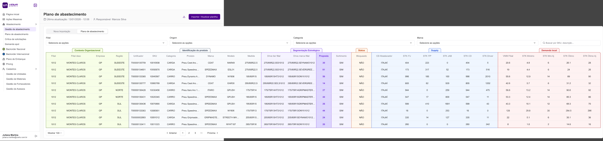

Product Design · Cantu Inc.
Built end-to-end UX for a supply chain management platform that replaced spreadsheets and isolated SAP tools across four departments — as the sole designer from discovery through production.
Cantu Inc. runs one of the largest automotive parts distribution networks in Brazil. Behind the commercial front sits a complex supply chain: Logistics, Supply Planning (S&OP), Importing, and International Purchasing — four departments that each manage critical, interdependent operations.
Before Verum Supply, these departments operated in silos. Planning happened in spreadsheets. Purchasing data lived in an isolated SAP configuration that didn't talk to logistics. Backorder status required manual follow-up. There was no shared view of what was in stock, what was on order, or what was on its way.
I was the sole UX designer on the project, involved from discovery through production across every module.
Four departments. Four disconnected systems. No shared visibility.
Before
Spreadsheets, isolated SAP, phone calls for backorder status, informal approvals with no audit trail, decisions made on stale data.
After
Single platform with real-time stock visibility, structured Push/Pull flows, approval chains with full audit trail, and consolidated backorder monitoring.
Discovery ran before the first screen. The most important output was defining two fundamentally different replenishment models that had to coexist in the same platform:
Keeping these as architecturally separate pillars — with Shipment as a third independent pillar — became the design decision that shaped every subsequent interaction pattern. Conflating them in early stakeholder sessions was the main source of scope confusion.
Module 01
Two modes, one coherent interface. The Push flow is system-driven; the Pull flow is branch-initiated with full governance.
Push:
Pull:
Key Design Decision
The supply planning table spans dozens of columns — organizational context, product identity, strategic segmentation, status, stock levels, and demand data — all simultaneously necessary. Scrolling through unlabeled columns created constant disorientation: analysts couldn't tell at a glance whether a column belonged to stock or demand data.
The solution: color-coded group headers acting as visual landmarks across the full table width. Six segments, each with a distinct hue spanning its columns — so analysts scan directly to the segment they need without reading individual headers to orient themselves.

Plano de abastecimento — color-coded segments: Organizational Context (gray), Product Identity (blue), Strategic Segmentation (amber), Status (red), Supply (blue), Local Demand (purple)
| Segment | Columns |
|---|---|
| Organizational Context | Branch, Company, Region |
| Product Identity | SKU, Category, Product, Brand, Model, Size |
| Strategic Segmentation | Branch drive, Brand drive, Proposal, Assortment |
| Status | Blocked |
| Supply | Distribution center, stock levels by location |
| Local Demand | VMM, Min stock, Optimal stock |
Additional table decisions: fixed + user-configurable columns (critical columns always visible, secondary columns toggled), auto-save (removing the explicit save button eliminated a recurring data loss pattern), and session-persistent smart filters (hide zero-quantity SKUs, hide already-allocated SKUs).
Module 02
Before this module, backorder status required phone calls and email chains across systems. The monitoring screen gave the supply team a consolidated operational view: which orders were stuck, at which stage, and why.
Key features: SAP integration for real-time order sync, material detail modal consolidating full item data in a single view, divergence management for discrepancies identified during SAP sync, and individual order detail screens with full operational context.
Module 03
A supply chain platform serving multiple departments requires precise access control. I designed the system around three operational roles: Supply Analyst (full planning and approval access), Branch Manager (pull requests scoped to their assigned units only), and ADM Master (user management). Profile-to-unit linking allows the same person to hold different roles at different locations — a common pattern in a distributed distribution network.
Module 04 — Governance
Features entering development underspecified was a recurring problem: bugs, rework, misaligned outcomes. I created the Score de Suficiência — a 14-dimension framework scored out of 100, with a 95-point threshold required before any feature enters the development queue.
The 14 dimensions span Critical (data & integrations, risks), Important (user journey, states & transitions, acceptance criteria), and Context (feature framing, UI behavior, access & permissions). The framework gave the team a shared language and turned the "is this ready?" debate into a number.
Metrics are directional and NDA-compliant.
Clarify the Push/Pull/Shipment boundary earlier in stakeholder communication. The three pillars are architecturally separate — Push doesn't auto-generate shipments, Pull requires a separate approval chain, Shipment is its own pillar. Stakeholders conflated them in the first two sprints. Making this explicit sooner would have saved scope confusion.
Design the column configuration system in the first version. The fixed/configurable column pattern was introduced as a post-launch improvement. Supply analysts had already adapted by exporting to Excel to manage column selection. Mapping their specific scanning workflows during discovery would have surfaced this in time to ship it from day one.